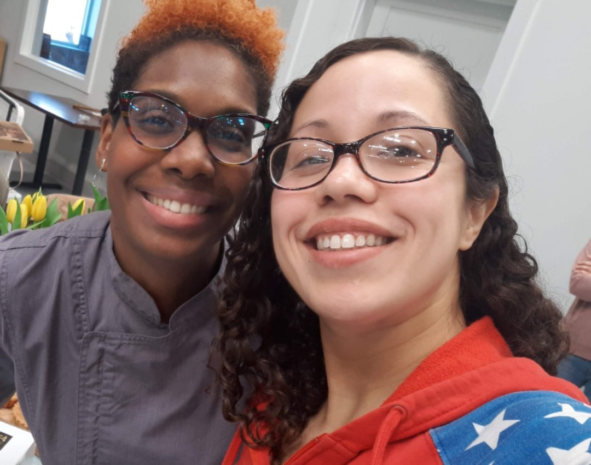
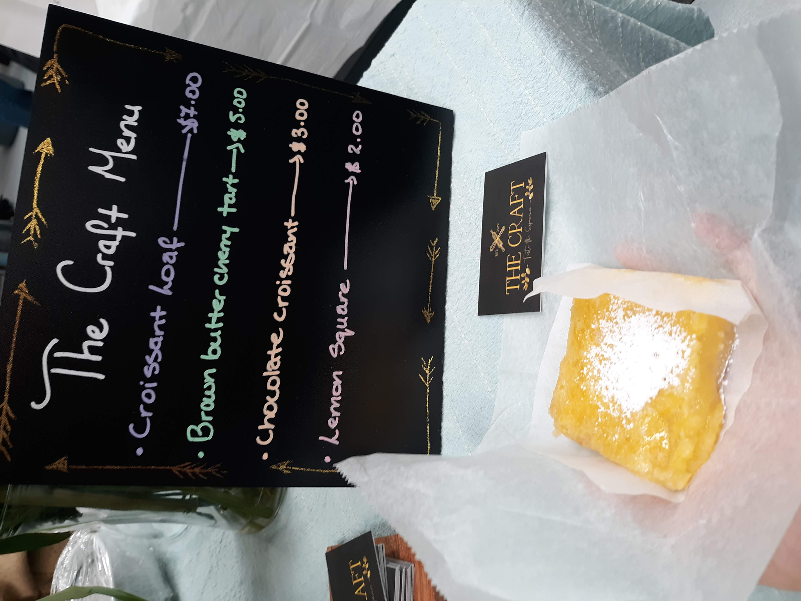
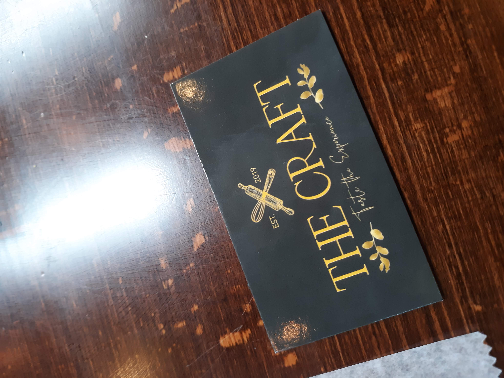

Let’s try to get by these trying times with a little help from our friends at,
Connecticut Valley Brewing company in South Windsor, CT.
Learn more about what they have to offer and upcoming events like the
International Woman’s Day Celebration!
Women Love Beer Too
Featured Strong Culinary Maven
Naima Craft, Physical Therapist by day and devoted Culinary Enthusiast by night

Blown away with how well this Lemon Square paired with this beer…

Visit The Craft for upcoming events and classes!
Socials
Just had the All Out non-alcoholic Extra Dark Beer from @AthleticBrewing. Not bad for curing a craving. I'm used to a stout with a bit of a sucker punch, but nice to have that dark roasted flavor without knockin me out for the night. Kinda thin like a nitro IMO. 👍 Good job
— Womenlovebeertoo (@Womenlovebeerto) January 29, 2021
Check out our latest Femme Fatale post featuring Naima Craft, independent business owner and baker of The Craft a CT Culinary School.
— Womenlovebeertoo (@Womenlovebeerto) January 27, 2021
Our post https://t.co/mnES9xNAtx
Her Store https://t.co/ftNmWQtIIW#ctlocal #ctbusinesses #ctbaker #ctwomenowned
Not much female representation in the #ctcraftbeer scene. I know it's there and that there are a lot of strong influential women in the #ctbeerscene. I plan on creating an outlet to represent these great ladies and also promote them and other #ctbeer businesses. #ctbeerladies
— Womenlovebeertoo (@Womenlovebeerto) January 20, 2021